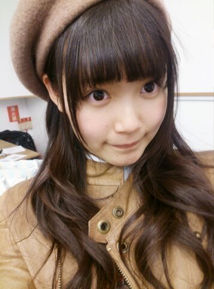
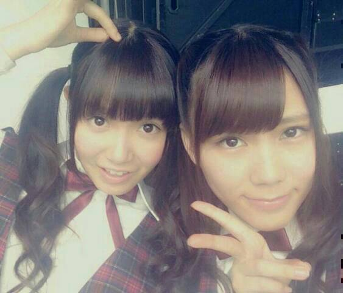
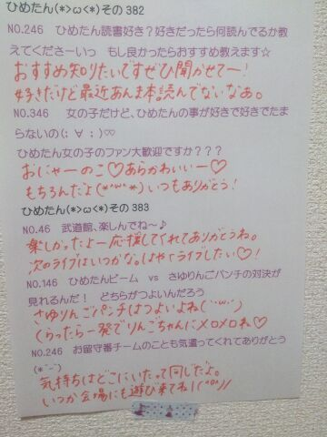

| 2014/03 24 Mon | ひめたん(*>ω<*)そ の424 |

あさっての方向を見る中元
ままがお花見の予定を立てています
もうそんな季節なんだねー
薄着はまだちょっと寒いしうーん難しい。
昨日の乃木どこ？で
8thアンダー曲「生まれたままで」
パフォーマンスさせていただきました∩^^∩＊
雰囲気伝わったかなー？
ライブと映像でもまた違うんだろうけど
あんな感じのパワフルなダンスです
前回の記事にも感想書いてくださった方もいて
ひめたん嬉しいよー
まだよって人はぜひチェックしてみてね
MVとの違いなんかも探しながらね
あのテーブルダンスとかはMV限定ー♪

ひなちゃん
今回はポジション隣で同じパート歌ってて
間奏では手なんか繋いじゃうんだからねー♪
気づけば発売まであとちょっとかー
ダンケシェーン♪ダンケシェーン♪
今日なんか質問返しが長ーーーくなったよー

 ４月から高校生になるんだけど
４月から高校生になるんだけど
これはした方がいいってことある？
高校入学おめでとう！
ペンケースにホッチキス入ってると
1年に3回くらい
クラスの人気者になれますよ(´ω`)
ひめたんかわいすぎます。
可愛さを1ください。
0だったひめたんのかわいさが-1になります
この差はイタい。
ところでひめたんは
5円玉の穴と50円玉の穴
どっちが好きですか？？
聞いてどうするのかしら
まじまじと見入っちゃうのは50円玉かな
あのギザギザした感じ。伝わるといいな
最近【さいきん】よく洋画【ようが】を観【み】るのですが、ひめたん【なかもとひめか とてもかわいい】の好【す】きな洋画【ようが】のシーン【しーん】を教【おし】えてください
親切すぎて読みにくいですけれども
最近も洋画もシーンも読めますね、ええ
そしてひめたんのフリガナが間違ってますよ
たんひめこちゃんは缶詰の中なら
何が好きですかー？
ぼぐばねー、んどねー、ブルーヅバブェー。
どした花粉症か(゜O゜)
缶詰あんま食べないけど
フルーツの缶詰って美味しいよね！
変わり種を知らない。ツナは美味しい。
ひめきゅんとにくきゅーって
響きが似てるよね？！
あらあらかわいい((o(。・ω・。)o))
かわいいからもうこの際
どっちでもいいや☆
私は今入院しているのですが、
ひめたんは入院したことありますか？
覚えてないけど1さいの頃
ちらっと入院したらしいですよー
おだいじに......。
ひめたんビームを宴会で一発ギャグとして
やろうと思ってるんですが
スベる気しかしません。
どーすればいいですか？
やってみないとわっからないっ
そーゆーことはやってから言って♪♪
ところで私は質問コーナーしか見ていませんが
ひめたんブログの見方として、
これが正しいのでしょうか？
それぞれの楽しみ方があるんだと思います( ^O^ )
その幅の広い日記を目指して、
それぞれのストライクゾーンを狙って
これからもがんばるよーなーんてね
私、最近自信なくしてて、
どうしたらいいですか？
いきなりすみません！誰かに相談したくて...。
ひめたんに相談してくれて
ありがとうね(＊´`＊)
あたしも自分に自信がない人だから
説得力に欠けるようで申し訳ないけど
乃木坂ちゃんみんなを見てて思うのは
努力とか、気の持ちようで
自分を好きになることってできるんだよねきっと
苦手なこととか自分磨きを人一倍頑張ってみて
「私はこんなにできるんだ！」って思えたら
自信に繋がるんじゃないかな
だからね一緒にがんばろう。ひめたんもがんばる。
ひめたんの日記の
コメント欄下２ケタに46を踏んだ方へ
手書きでコメ返するコーナー
＼ ひめたん46 ／

いつもコメントたくさん
ありがとうございます
春休みはおともだちに会えないけど
コメント読んでると
みなさん遊んでくれてるみたいで楽しいー♪
えくぼひめ＼(^ω^)／
お気に召していただけたようで
ひめたんもるんるんです
えくぼはコンプレックスのひとつだったけど
みなさん褒めてくれるから
ちょっとずつ認めてあげようとしてる。
(＊´・ω・＊)
コメント(593)
2014/03/24 23:36